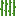
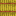
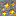
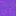

Un bloc dans Minecraft est une unité cubique fondamentale qui constitue l’environnement du jeu. Chaque bloc a une texture, des propriétés spécifiques (comme la résistance, la gravité, la lumière émise), et peut être manipulé par le joueur (ramassé, posé, détruit).
Les blocs représentent les matériaux et éléments naturels ou artificiels du monde Minecraft : terre, pierre, bois, minerais, eau, etc.
Ils sont la base de la construction, de la survie et de l’exploration dans le jeu.
Blocs
Bois
Bois
Le bois est un bloc possédant la texture des bûches sur leurs 6 faces.
Ils se déclinent en autant d'essences que leur homologue.
Bûches
Les bûches peuvent êtres trouvées sur les arbres à l'état naturel.
Elles sont principalement utilisées comme blocs de construction et pour créer des planches.
Planche
Les planches sont des blocs fabriqués à partir de bûches.
Elles ont l'apparence de séries de planches jointes entre elles.
Bloc de bambou
Le bloc de bambou est un bloc semblable à une bûche en bambou permettant de fabriquer des planches de bambou.
Roche
Roche
La roche est un bloc qui apparaît sous la surface du monde normal et à la surface des montagnes.
Pierre
La pierre de construction de base, obtenue en minant de la roche. Utilisée pour les constructions et fours.
Granite
Bloc de roche ornementale, principalement utilisé pour décorer ou construire.
Diorite
Bloc de roche claire, utile pour la décoration ou la construction.
Stone Bricks
Blocs de pierre taillée, résistants et esthétiques pour les bâtiments.
Deepslate
Bloc sombre trouvé en profondeur, utilisé pour les constructions et crafts avancés.
Deepslate Bricks
Blocs de deepslate taillés, principalement décoratifs et résistants.
Surface
Briques
Bloc de construction fabriqué avec des briques cuites, utilisé pour décorer ou construire.
Grès
Bloc trouvé dans les déserts, utilisé pour la construction ou l’architecture décorative.
Grès rouge
Bloc rouge trouvé dans les déserts rouges, utilisé en construction.
Prismarine
Bloc bleu trouvé dans les monuments océaniques, utilisé pour la construction.
Nether
Netherrack
La netherrack (ou roche du Nether) est un bloc rocheux trouvable dans le Nether et sur les portails en ruine.
Briques du nether
Les briques du Nether constituent la majeure partie des forteresses du Nether.
Roche noir
La roche noire est un bloc sombre qui se trouve à l'état naturel dans le Nether.
Basalte
Le basalte est un bloc qui se trouve dans le Nether sous forme de pillier.
End
Pierre de l'End
La pierre de l'End est un bloc qui ne se trouve à l'état naturel que dans l'End, dont elle constitue toute l'île.
Bloc de purpur
Le Bloc de purpur est un bloc décoratif qui est naturellement généré dans les cités et navires de l'End.
Sol
Argile
L'argile est un bloc que l'on trouve en abondance dans les cavernes luxuriantes ou en parcelles dans les eaux de surface.
Terre
La terre est un bloc que l'on trouve en abondance dans le monde normal.
C'est un bloc très fragile qui peut facilement être détruit avec de la TNT ou par des creepers.
Gravier
Le gravier est un bloc affecté par la gravité généré naturellement à la surface et dans le Nether.
Boue
La boue est un bloc se générant naturellement dans les marais à mangroves.
Nylium
Le nylium est un bloc qui se génère dans le Nether.
Il possède deux variantes, le nylium biscornu et le nylium carmin.
Sable
Le sable est un bloc affecté par la gravité qui se trouve en abondance dans les déserts et les plages, et plus rarement dans ou près de la surface de l'eau.
Plantes
Citrouille
Une citrouille est un bloc de fruit apparaissant sur l'herbe dans la plupart des biomes de La Surface
Pastèque
La pastèque est un bloc apparaissant naturellement dans les biomes jungle servant à obtenir des tranches de pastèque.

Canne à sucre
La canne à sucre est un bloc qui pousse toujours près de l'eau.

Botte de paille
Une botte de paille est un bloc utilisé pour la décoration et le stockage du blé, qui sert aussi à soigner et à faire grandir les chevaux, à nourrir les lamas et à réduire les dégâts de chute
Minerais
Minerai de Diamant
Le minerai de diamant est un minerai rare à partir duquel on obtient le diamant
Minerai de Fer
Le minerai de fer est un minerai à partir duquel on obtient du fer brut qui peut être fondu en lingot de fer.
Minerai de Charbon
Le minerai de charbon est le minerai le plus commun dans Minecraft.

Minerai d'or
Le minerai d'or est un minerai rare à partir duquel on obtient de l'or brut qui peut être fondu en lingot d'or.
Interactif
Alambic
L'alambic est un bloc utilisé pour fabriquer des potions, des potions jetables et des potions persistantes.
Enclume
Les enclumes sont des blocs qui servent à réparer et renommer des objets sans leur faire perdre leurs éventuels enchantements.
Fourneau
Un fourneau est un bloc utilisé pour faire cuire des blocs et des objets et les convertir en d'autres éléments.
Table d'enchantement
La table d'enchantement est un bloc qui permet de réaliser des enchantements en trois étapes, avec des effets basés sur les sorts choisis mais aussi un élément aléatoire.
Coffre
Les coffres sont des blocs capables de stocker les objets.
Utilisable
Échelle
L'échelle est une façade de blocs en bois, utilisée pour grimper le long des murs.

Portail du Nether
Le bloc de portail du Nether est la partie translucide du portail du Nether qui téléporte le joueur vers et en dehors du Nether.
TNT
Le TNT (Trinitrotoluène) est un bloc qui peut être utilisé par le joueur pour déclencher une explosion contrôlée.
Éponge
L'éponge est un bloc qui absorbe l'eau autour de lui, devenant alors une éponge mouillée .
Source des informations : Minecraft Wiki (consulté le 05/11/2025)